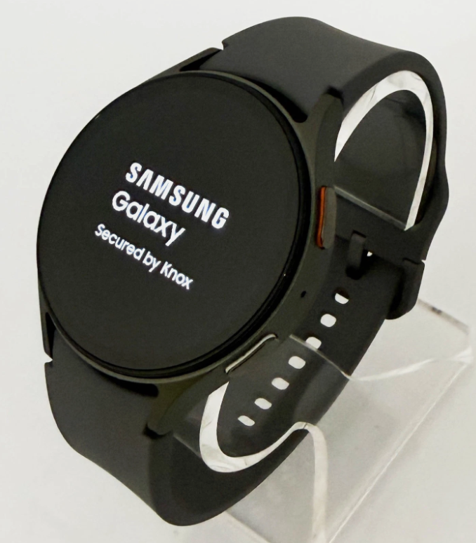
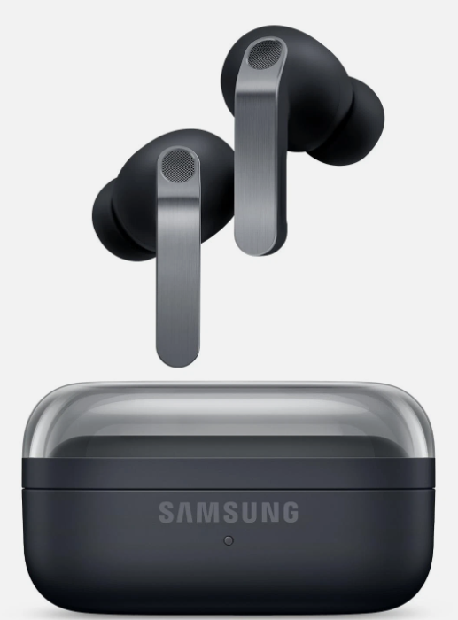

Samsung Galaxy S26 Ultra
Samsung Galaxy S26 Ultra -это флагманский смартфон линейки Samsung Galaxy S26 Ultra, оснащенный процессором Snapdragon 8 Elite.
продвинутыми ИИ-функциями (Galaxy AI) и встроенной технологией защиты экрана от посторонних глаз Privacy Display.
Samsung Galaxy Watch 7
Samsung Galaxy Watch 7 — это флагманские смарт-часы от Samsung, главной особенностью которых является встроенный модуль 4G LTE (eSIM).
Это позволяет принимать звонки, отправлять сообщения и использовать интернет на часах автономно, без подключения к смартфону.

Samsung Galaxy Watch 7
Samsung Galaxy Buds 4 Pro — это актуальная флагманская модель, в которой производитель вернулся к более привычной эргономичной форме со вставкой из натурального металла (без массивных светящихся ножек-палочек прошлого поколения) и сделал глубокий упор на аудиофильский звук и функции искусственного интеллекта Galaxy AI. Модель Proявляется внутриканальной (с силиконовыми амбушюрами) для плотной посадки и максимальной изоляции, в отличие от базовых вкладышей Buds 4.
